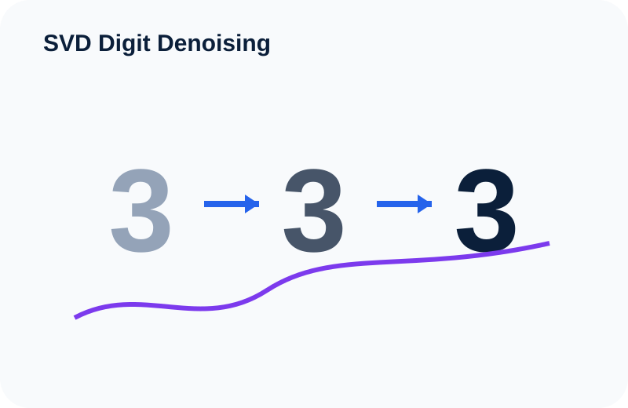

SVD Digit Denoising
A visual, mathematical and practical study of how Singular Value Decomposition (SVD) can separate useful image structure from noise through low-rank reconstruction.
Completed
1. Project question
How much noise and dimensional complexity can be removed while preserving the recognizable structure of a handwritten digit?
The project uses noisy MNIST-style images and treats denoising as a linear-algebra problem. Rather than asking a neural network to learn a complicated mapping, we ask a more fundamental question: can the dominant geometric structure of the data be captured with only a small number of directions?
2. From an image to a data matrix
Each MNIST image has 28 × 28 = 784 pixels. Flattening the image converts it into a vector with 784 pixel values.
For this project, the dataset contains 6,131 noisy images, so the full data matrix is:
This is important because SVD does not “see” a picture in the human sense. It sees a numerical matrix. The mathematical task is to find the most important directions of variation inside that matrix.
| Object | Dimension | Interpretation |
|---|---|---|
| One image | 28 × 28 | A grayscale handwritten digit. |
| Flattened image | 1 × 784 | One row vector containing the 784 pixel values. |
| Dataset matrix X | 6131 × 784 | All noisy images stacked row by row. |
3. What is Singular Value Decomposition?
Singular Value Decomposition factorizes a matrix into three simpler matrices:
Each part has a different role:
| Term | Meaning | Intuition in this project |
|---|---|---|
| U | Left singular vectors | How strongly each image aligns with the latent directions found by SVD. |
| Σ | Diagonal matrix of singular values | The importance or strength of each latent direction. |
| VT | Right singular vectors | Pixel-space patterns that describe dominant structures across the images. |
4. Singular values: where the information lives
The diagonal entries of Σ are the singular values:
The first singular value corresponds to the strongest direction in the data, the second to the next strongest direction after accounting for the first, and so on.
When the singular values fall rapidly, it is evidence that a relatively small number of components may capture most of the important structure.
5. Low-rank reconstruction
Instead of reconstructing X using every singular component, we keep only the first k components.
Equivalently:
The number k is the reconstruction rank. It controls the trade-off between compression and fidelity:
| k | Effect | Risk |
|---|---|---|
| Very small | Strong compression and strong smoothing | Important digit structure may disappear. |
| Moderate | Dominant structure is preserved while some noise is removed | Often the useful denoising region. |
| Very large | Reconstruction approaches the original noisy data | Noise can re-enter the image. |
6. Cumulative singular-value energy
One useful way to choose k is to ask how much of the matrix's total squared singular-value energy is retained by the first k components.
where r is the full rank of the matrix.
Energy is useful, but it is not the whole story. A reconstruction can retain a high fraction of matrix energy while still not being the best perceptual denoising result. That is why this project also evaluates reconstruction quality.
7. Measuring reconstruction quality with MSE and PSNR
Mean Squared Error (MSE)
It averages the squared pixel differences between a reference image I and a reconstructed image K. Lower is better.
Peak Signal-to-Noise Ratio (PSNR)
PSNR expresses reconstruction quality on a logarithmic decibel scale. Higher is better when comparing reconstruction against a clean reference.
The project therefore uses both cumulative energy and PSNR when examining candidate values of k. This gives two complementary views:
- Energy: how much of the matrix structure is retained?
- PSNR: how closely does the reconstruction recover the clean signal?
8. Why denoising can work
The central intuition is that the handwritten digit has shared structure, while random noise is less consistently aligned across images.
If much of the useful digit information is concentrated in the strongest singular directions, then a lower-rank reconstruction can preserve the recognizable shape while suppressing weaker, more irregular components.
The reconstructed rows are reshaped back from length 784 into 28 × 28 images for visual inspection.
9. A small conceptual example
Imagine that an image contains a strong digit pattern plus many tiny random pixel disturbances. Suppose the singular values begin:
The first few components are much larger than the rest. Keeping the strongest components may preserve the digit's main strokes while removing weaker directions. However, if k is too small, the reconstruction becomes overly smooth; if k is too large, more noise returns.
10. What this project demonstrates
- How an image dataset can be represented as a high-dimensional matrix.
- How SVD decomposes that matrix into ordered latent directions.
- Why singular values provide a natural ranking of component importance.
- How truncated SVD produces a low-rank approximation.
- Why cumulative energy alone is not enough to judge denoising quality.
- How PSNR adds an image-reconstruction criterion for selecting k.
- How linear algebra connects directly to practical data-science tasks such as compression, denoising and dimensionality reduction.
11. Limitations and interpretation
SVD is a linear method. It is powerful because it is transparent and mathematically well defined, but it does not automatically understand semantic image structure. A nonlinear model may capture more complicated patterns, while SVD offers a particularly clean way to study the geometry of the data.
The project should therefore be understood as both a denoising experiment and a demonstration of a broader idea: high-dimensional data can contain a much lower-dimensional structure that carries most of the useful information.
12. Explore the project
The GitHub repository contains the project code and technical implementation. The two accompanying videos walk through the project visually.